<mat-toolbar class="mat-elevation-z8" color=>
  <div class="imgcont">
    
  </div>
  <span routerLink="home" class="title">Project Manager</span>
  <span class="example-spacer"></span>

  <div class="input-filed">
    <input
    type="search"
    placeholder="Tapez votre recherche..."  
    />
    <mat-icon class="ico">search</mat-icon>
  </div>
  <span class="example-spacer"></span>

  <button  routerLink="/add" [hidden]="!hidden">Actions
  </button>
  <!-- mat-button [matMenuTriggerFor]="menu" -->
  <!-- <mat-menu #menu="matMenu" >
    <button mat-menu-item>Une compagnie</button>
    <button mat-menu-item>Une tâche </button>
    <button mat-menu-item>Un projet</button>
    <button mat-menu-item>Une taskLog</button>
  </mat-menu> -->

  
  <!-- <a class="btn" routerLink="/home" mat-button>Accueil</a>
  <a class="btn" routerLink="/company" mat-button>Compagnies</a>
  <a class="btn" routerLink="/project" mat-button>Projets</a>
  <a class="btn" routerLink="/task" mat-button>Taches</a>
  <a class="btn" mat-button>Journal</a> -->
  <span class="example-spacer"></span>
  <mat-icon (click)="openNotif()">notifications</mat-icon>
  <span class="example-spacer"></span>
  <span class="example-spacer"></span>
  <span class="example-spacer"></span>

  <div class="cercle" (click)="openDialog()"></div>
</mat-toolbar>
